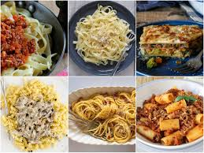

Pasta

Description
Pasta, a staple of Italian cuisine that has conquered hearts worldwide, is made primarily from durum wheat flour
combined with water or eggs. This versatile food comes in hundreds of shapes and sizes, from long strands like
spaghetti
and fettuccine to short forms like penne and farfalle, each designed to hold sauces in unique ways. Fresh pasta,
often
made with eggs, has a tender, delicate texture, while dried pasta offers a firmer bite and longer shelf life.
The history of pasta dates back thousands of years, with some historians believing it originated in China before
making
its way to Italy through trade routes. By the 14th century, pasta had become deeply embedded in Italian culture,
with
different regions developing their own signature dishes and sauce pairings. Today, pasta is celebrated not only for
its
delicious taste and texture but also for its affordability, ease of preparation, and ability to serve as a canvas
for
countless culinary creations, from simple garlic and olive oil combinations to rich meat-based ragùs.
Ingredients
For Fresh Pasta (Basic Recipe):
- Durum wheat flour or "00" flour
- Eggs
- Salt
- Water
For Dried Pasta
- Semolina flour (coarse durum wheat flour)
- Water
- Salt
Optional ingredients for flavored pasta:
- Spinach (for green pasta)
- Tomato paste or beetroot (for red pasta)
- Squid ink (for black pasta)
- Herbs (like basil or oregano)
- Saffron (for yellow pasta)
Note: Commercial pasta may also include:
- Enriched flours
- Vitamins (particularly B vitamins)
- Minerals
- Food preservatives (in some cases)
Steps:
-
Prepare the dough:
- Pour flour onto a clean surface, making a well in the center
- Crack the eggs into the well
- Add a pinch of salt
- Using a fork, gradually mix eggs into flour from inside out
-
Knead the dough:
- Once eggs are incorporated, knead with hands for 8-10 minutes
- Dough should be smooth and elastic
- If too dry, add water drops; if too sticky, add flour
- Form into a ball
-
Rest the dough:
- Wrap in plastic wrap
- Let rest at room temperature for 30 minutes
-
Roll the dough:
- Divide dough into smaller portions
- Using a pasta machine or rolling pin, roll until thin
- Start thick and gradually make thinner
-
Cut the pasta:
- For fettuccine: roll and cut into strips
- For ravioli: cut squares and fill
- For spaghetti: use pasta machine cutter
-
Cook:
- Bring water to boil
- Add salt
- Cook fresh pasta 2-3 minutes
- Drain and serve with your favorite sauce
Tips:
- Dust with flour while working to prevent sticking
- Fresh pasta cooks much faster than dried pasta
- Can be frozen for later use